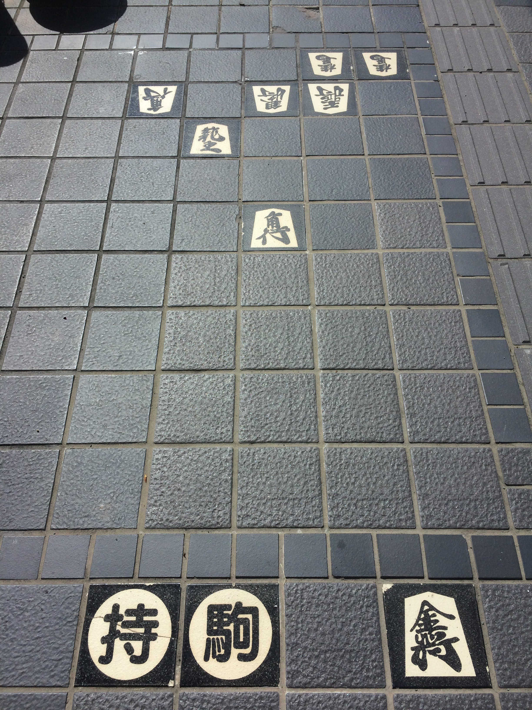

やさしまの将棋散歩
＜やさしまの将棋歴＞
- 小学4年生（秋）…祖父（三段）に将棋を教わる
- 小学4年生（冬）…祖父と毎日将棋を指すようになる
- 小学5年生（春）…初めて祖父に勝ち、お小遣いで将棋の本を買う
- 小学校卒業とともに将棋を指さなくなる
- 大学1年生（秋）…Youtubeでたまたま将棋実況を見て、将棋を再開する
- 大学1年生（冬）…ＰＣに将棋ソフトを入れ、研究をし始める
- 大学2年生（冬）…日本将棋連盟公認の将棋アプリ「将棋ウォーズ」で初段になる
〈将棋の町 天童へ行った時の写真〉

〈将棋ウォーズにおける段級〉
- 10分切れ負け 1級
- 3分切れ負け 1級
- 10秒将棋 初段
〈10秒将棋の月別勝率〉